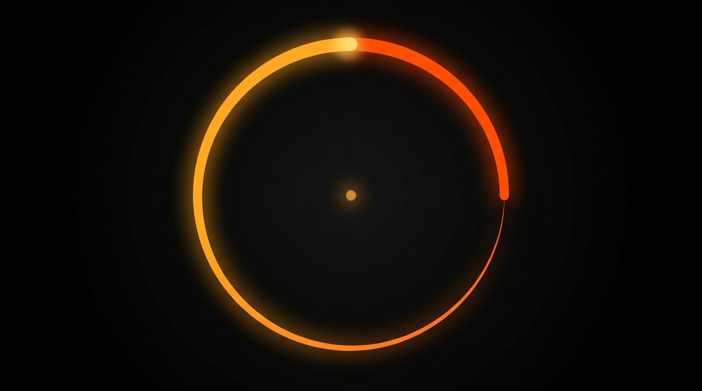
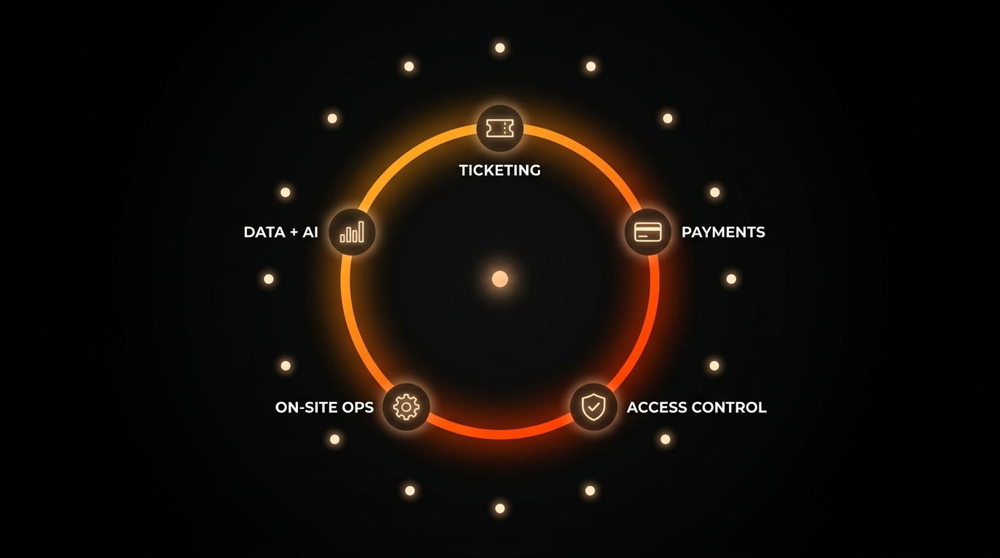

| Bloque | Tiempo | Duración | Qué hace |
|---|---|---|---|
| 1. Apertura | 0:00–0:08 | 8s | Misión + "marketplace" (seed) |
| 2. Primera fricción | 0:08–0:21 | 13s | Mercado Pago nace, sale del ecosistema |
| 3. Periferia del marketplace | 0:21–0:42 | 21s | Shipping, Ads, Shops, 1P (fondo amarillo) |
| 4. Fintech | 0:42–0:58 | 16s | Digital Account, Credit, scoring (fondo azul) |
| 5. Integración | 0:58–1:10 | 12s | Retail + ecosistema completo visible |
| 6. Usuario al centro | 1:10–1:19 | 9s | "Center of users' lives" + MELI+ |
| 7. Cierre tesis | 1:19–1:34 | 15s | Ecosystem → moat → best is yet to come |
Notar el patrón: bloques largos en el medio (16–21s) cuando hay mucho que mostrar; bloques cortos al inicio y al final (8–15s) cuando se prioriza el punch.
Cuando agrupo los 8 beats por afinidad temática y por estado visual del anillo, quedan 6 bloques:
| Bloque | Beats | Duración estimada | Qué hace | Estado del anillo |
|---|---|---|---|---|
| 1. Quiénes somos | 1 + 2 | ~15s | Misión + origen (28 días, in-house) | Seed → primer arco |
| 2. Qué construimos | 3 | ~14s | Una plataforma · 5 capas in-house | Anillo crece |
| 3. Cómo se vende y crece | 4 + 5 | ~22s | Dos modelos + Land · Learn · Convert | Segundo arco · dots aparecen |
| 4. Por qué es defendible | 6 | ~12s | 11 países · 95% desatendido · moat | Anillo completo · 11 dots iluminados |
| 5. Hacia dónde va | 7 | ~14s | Data layer + verticales adyacentes | Líneas convergen al centro |
| 6. Cierre tesis | 8 | ~10s | Ticketing es entry point · la compañía es la plataforma | Gradient brand pleno |
Total: ~87s, dentro del rango 90–100s.
Cada bloque tiene su propio fondo o paleta dominante, igual que MELI cambia entre negro / amarillo / azul / amarillo según el bloque:
El cambio de fondo entre bloques le da al espectador la sensación de avanzar de capítulo, que es exactamente lo que hace MELI cuando pasa de marketplace amarillo a fintech azul.
| MELI | Ticketplus |
|---|---|
| Apertura + marketplace seed | Quiénes somos |
| Mercado Pago nace | (no aplica — saltamos directo a estructura) |
| Periferia del marketplace | Qué construimos (plataforma) |
| Fintech | Cómo se vende y crece (dos modelos + flywheel) |
| Integración | Por qué es defendible (moat) |
| Usuario al centro | Hacia dónde va (data layer) |
| Cierre tesis | Cierre tesis |
MELI tiene un bloque extra ("Mercado Pago nace") porque en su historia el segundo negocio nació explícitamente del marketplace. Nosotros no lo tenemos porque honestamente no son dos negocios — entonces el bloque cronológico se fusiona con el estructural ("una plataforma · dos modelos").
Ticketplus no es una ticketera con tecnología. Es una plataforma tecnológica que tiene al ticketing como primera vertical, y que se monetiza de dos formas sobre la misma codebase. El video tiene que sostener esa estructura: una plataforma, dos modelos de salida al mercado, un wedge actual, un horizonte de verticales adyacentes que monetizan el activo central — la data layer.
El relato no es la historia de la compañía. Es la arquitectura actual de la compañía. La historia entra solo como puntada — el 2014, los 28 días, los doce años in-house — para anclar credibilidad. Pero el cuerpo del video es estructural, no cronológico.
Ticketing companies sell tickets. Ticketplus es algo distinto. Ticketplus es el sistema operativo del entretenimiento en vivo de Latinoamérica — la infraestructura que une ticketing, payments, control de acceso, operación on-site y data en una sola plataforma desplegada en once países. Live entertainment es la primera vertical, no la compañía.
Dos fundadores, en Chile, en 2014. El primer producto fue un motor de ticketing construido en veintiocho días. Doce años después, esa arquitectura sigue siendo el core de una plataforma que opera en once países, mueve diez millones de tickets al año y mantiene un uptime de 99,9%. Todo construido in-house. Sin venture capital. Sin private equity. Cap table cien por ciento de fundadores, Chairman y empleados clave.
Esta es la plataforma. Cinco capas integradas sobre la misma codebase: ticketing, payments, access control, on-site operations, y data + AI. Ningún módulo es producto separado. Cada capa nació porque la operación real la exigió — la cola virtual nació cuando la concurrencia rompía las herramientas off-the-shelf; el agregador de pagos nació porque cincuenta y tantos medios de pago locales fragmentados volvían imposible operar transversalmente en LATAM; el access control nació porque el productor necesitaba que la entrada al evento funcionara con la misma seguridad que la venta. Es una sola codebase, una sola plataforma, ningún core de terceros.
Dos modelos. Una plataforma. Full Operation es el core del negocio: Ticketplus opera el evento end-to-end bajo su propia marca, con stack completo y más módulos contratados. Take rate del 17,3%. Representó el 94% del revenue 2025. Ahí corren los grandes tours, los festivales, los campeonatos.
White-Label es el accelerator. El partner local opera bajo su propia marca usando nuestra infraestructura. Take rate del 1,6%. Es deliberadamente liviano — porque lo importante no es ese 6% de revenue, es que cada transacción del partner pasa por nuestra plataforma desde el día uno, y eso nos da años de visibilidad operacional completa antes de cualquier decisión de capital.
No son dos negocios. Son dos puertas de salida al mercado de la misma plataforma.
White-Label es cómo aterrizamos en un mercado nuevo: el partner local pone la marca, nosotros ponemos la tecnología. Land. Después aprendemos — durante años — el P&L real, el churn real, los márgenes reales, el ajuste cultural. Learn. Y selectivamente convertimos a los operadores más fuertes en relaciones Full Operation con take rate materialmente más alto y riesgo de integración bajo. Convert.
Hoy hay más de cincuenta partners en pipeline de conversión. Once mercados activos, roadmap hacia veinticinco. Otros hacen due diligence desde afuera, leyendo data histórica. Nosotros la hacemos desde adentro de la infraestructura operativa misma. Eso es el flywheel.
Doce años acumulando capas operativas que no se pueden replicar con capital. Once jurisdicciones con sistemas regulatorios distintos. Más de cincuenta medios de pago locales integrados. Más de dos mil ochocientos partners embebidos en la operación diaria. Doce años de data operacional y transaccional cross-country. Los líderes globales del ticketing controlan más del 80% del mercado en USA y Europa; en Latinoamérica, fuera de México y Brasil, menos del 20%. La compañía está profunda donde los gigantes globales no llegaron: el noventa y cinco por ciento desatendido del mercado.
Sobre toda esa infraestructura se compone un solo activo: la data layer del entretenimiento en vivo de Latinoamérica. Cada ticket vendido, cada medio de pago utilizado, cada patrón de compra, cada validación de acceso, cada operación de boletería pasa por la plataforma. No hay en Latinoamérica nadie con más data de esta industria.
Es el mismo playbook de Stripe en pagos, Shopify en e-commerce, Toast en restaurantes: capturar la data layer primero, monetizar capas adyacentes después. Para Ticketplus eso significa que el ticketing es el entry point, y que las verticales que vienen — payments para partners, BI, dynamic pricing, financial services — monetizan un activo que la primera vertical ya construyó.
Ticketing is the entry point. La compañía es la plataforma. Esto es lo que construimos. Esta es nuestra ventaja competitiva. Lo mejor está por venir.
Primeros ocho segundos del video — el clip Veo 00–08s completo. Es un bloque denso: del punto luminoso inicial a la plataforma con sus 5 módulos ya nombrados. Los 3 chunks narrativos entran como overlay en post-producción; los 5 labels de módulo (TICKETING · PAYMENTS · ACCESS CONTROL · ON-SITE OPS · DATA + AI) son parte del clip Veo (estáticos, no narrativos).
Pantalla totalmente negra. Un silencio de un segundo antes de que entre cualquier elemento. Da la sensación de que algo va a empezar, no de que ya empezó. Es el beat de respiración que marca el tono institucional del video.
En el centro exacto del canvas aparece un punto luminoso muy pequeño con glow cálido en gradient brand. Crece, llega a peak de pulso, y vuelve a respirar. Todavía no hay texto. El punto es el seed visual del anillo que vendrá.
Bajo el punto entra el primer chunk como overlay en post — typewriter, sans-serif blanco, centrado. La frase es el anchor: nombramos lo que el espectador asume que somos para usar la crítica como puerta.
Post overlay: "Ticketing companies sell tickets."
El punto empieza a trazar un arco luminoso clockwise desde las 12. Sale el chunk 1 y entra el chunk 2. Ya no hay un punto inerte, hay un sistema en construcción.
Post overlay: "Ticketplus runs the entire event lifecycle."
El arco sweeps past 3 en punto y 6 en punto y rellena la última brecha — el anillo queda completamente cerrado. Sale el chunk 2 y entra el chunk 3, el statement de la tesis.
Post overlay: "The operating system for live entertainment in Latin America."
En las 12 en punto del anillo se ilumina el primer ícono — ticket — con su label TICKETING al lado. Fade-in suave con un pulso pequeño. El anillo deja de ser solo forma: empieza a poblarse de arquitectura.
En las 2:30 aparece el ícono de tarjeta con label PAYMENTS; un instante después, en las 5, aparece el ícono de escudo con label ACCESS CONTROL. Dos íconos en un segundo — el ritmo se acelera porque la cabeza del espectador ya entendió el patrón.
En las 7:30 aparece el ícono de operaciones con label ON-SITE OPS; en las 9:30 el último, gráfico de barras con label DATA + AI. Los 5 módulos están visibles. Chunk 3 todavía estable en post como overlay. Esta es la última imagen del clip 00–08s y será el primer frame del clip 08–16s — donde el origen narrativo (2014, in-house, no VC) entra a apuntalar la credibilidad de la plataforma que ya vimos.

ES
[00:00-00:01] Canvas negro puro con viñeta sutil. En el centro aparece un
punto luminoso muy pequeño en gradient cálido ámbar-rojo (#ffab24 → #ff5500),
pulsando suavemente — el halo se expande y contrae una vez.
[00:01-00:02] El punto sigue pulsando en el centro. La composición está
quieta y calma, esperando.
[00:02-00:04] El punto se estira en sentido horario desde las 12 en punto y
empieza a trazar un arco luminoso. El arco crece rápido, recorriendo el
contorno de un círculo invisible centrado, pintándolo grado a grado en el
gradient brand.
[00:04-00:05] El arco completa la última brecha en las 3 en punto y el anillo
queda totalmente cerrado. El punto central permanece encendido como ancla.
[00:05-00:08] Cinco íconos monoline luminosos aparecen uno por uno a lo largo
del anillo, en secuencia coreografiada: ticket a las 12, tarjeta de crédito
a las 2:30, escudo a las 5, engranaje a las 7:30, gráfico de barras a las
9:30. Junto a cada ícono aparece su label sans-serif blanco (horizontal,
afuera del anillo): 'TICKETING', 'PAYMENTS', 'ACCESS CONTROL', 'ON-SITE OPS',
'DATA + AI'. Cada par ícono+label entra con un glow cálido y un pulso
pequeño. El tercio inferior del canvas queda completamente vacío — sin texto
narrativo dentro del clip. Estilo motion-graphic 2D plano, minimalista,
estética corporativa premium.
EN
[00:00-00:01] Pure deep black canvas with subtle vignette. At the center, a
very small luminous dot appears in warm amber-red brand gradient
(#ffab24 → #ff5500), pulsing gently — the halo expands and contracts once.
[00:01-00:02] The dot keeps pulsing at the center. The composition stays
still and calm, waiting.
[00:02-00:04] The dot elongates clockwise from the 12 o'clock position and
starts tracing a luminous arc. The arc grows fast, following the contour of
an invisible centered circle, painting it one degree at a time in the warm
brand gradient.
[00:04-00:05] The arc fills the last remaining gap at 3 o'clock and the ring
becomes fully closed. The central core dot stays lit as an anchor.
[00:05-00:08] Five luminous monoline icons fade in one by one along the ring
path, in a choreographed sequence: ticket at 12 o'clock, payment card at
2:30, shield-with-check at 5, operations gear at 7:30, bar chart at 9:30.
Next to each icon, its small horizontal white sans-serif label fades in
(outside the ring): 'TICKETING', 'PAYMENTS', 'ACCESS CONTROL', 'ON-SITE
OPS', 'DATA + AI'. Each icon + label arrives with a soft warm glow and a
tiny pulse on appearance. The lower third of the canvas stays completely
empty black — no narrative text inside the clip. Flat 2D motion-graphic
style, minimalist, premium corporate aesthetic.
| Tiempo | Chunk |
|---|---|
| 0:02 — 0:03 | "Ticketing companies sell tickets." |
| 0:03 — 0:04 | "Ticketplus runs the entire event lifecycle." |
| 0:04 — 0:08 | "The operating system for live entertainment in Latin America." |
Segundo clip Veo (08–16s) — origen + huella LATAM. Continuidad: el primer frame es idéntico al último del Bloque 1 (anillo cerrado + 5 módulos con labels). En estos 8 segundos aparecen los 11 dots LATAM en una órbita exterior alrededor del anillo — visualización del "11 países" sin mapa. En paralelo, los 3 chunks de origen entran como overlay en post: 2014, escala actual, independencia de capital.
El anillo con sus 5 módulos + labels permanece estable en el centro. Pulso suave. Es el segundo de respiración después del primer cierre visual del video — la plataforma "existe" y la audiencia ya la procesó.
Empieza a aparecer una órbita exterior al anillo. Un primer dot luminoso pequeño se ilumina en las 12 en punto, claramente afuera del anillo de módulos.
Dos o tres dots más se iluminan en sucesión clockwise — el espectador empieza a entender que se está formando una segunda órbita alrededor del anillo. La cadencia es rápida pero no atropellada.
Más dots aparecen — ya hay seis u ocho visibles, distribuidos uniformemente. Entra el primer chunk del bloque, el salto de escala. La frase y los dots se refuerzan mutuamente: 11 países = los dots que están naciendo.
Post overlay: "12 years · 11 countries · 10M tickets / year."
Los últimos 3 dots se iluminan y completan la constelación de 11. La órbita exterior queda formada. El anillo y sus 5 módulos siguen estables como ancla. El espectador ahora lee: una plataforma con presencia LATAM real.
Los 11 dots LATAM están todos visibles formando la órbita exterior. El chunk de escala sigue estable. El anillo y sus 5 módulos firmes en el centro.
El sistema completo pulsa suave una vez. La audiencia tiene tiempo para registrar la imagen compuesta antes del cierre — anillo, módulos y huella LATAM en una sola pieza.
Frame final estable. Esta es la última imagen del clip 08–16s y será el primer frame del clip 16–24s donde entra el segundo modelo de GTM (Full Op vs White-Label).
(Es el mismo PNG que el frame final del Bloque 1 — continuidad invisible.)

ES
[00:00-00:01] El anillo cerrado con sus 5 íconos + labels permanece estable
en el centro. Pulsa suavemente una vez, el punto central glowing. Un beat de
calma para dejar registrar la plataforma.
[00:01-00:05] Once dots luminosos pequeños aparecen uno por uno a lo largo
de un anillo invisible exterior alrededor del anillo principal (radio ~32%
de la altura del canvas). Los dots aparecen en secuencia coreografiada,
clockwise empezando desde las 12. Cada dot es pequeño (~0.7% canvas width),
glow cálido blanco-ámbar, con un halo diminuto al aparecer — como estrellas
distantes encendiéndose alrededor de la plataforma. Al final del segmento
los 11 dots están visibles formando una constelación.
[00:05-00:08] Los 11 dots LATAM descansan tranquilos en su órbita exterior.
El anillo central y sus 5 módulos + labels siguen estables. El anillo pulsa
suave. El punto central pulsa una vez más. Estilo motion-graphic 2D plano,
minimalista, estética corporativa premium.
EN
[00:00-00:01] The closed ring with its 5 module icons + labels (TICKETING,
PAYMENTS, ACCESS CONTROL, ON-SITE OPS, DATA + AI) sits stable at the center.
The ring pulses softly once, the central core dot glows. A calm beat to let
the platform register.
[00:01-00:05] Eleven small luminous round dots fade in one by one along a
wider invisible outer ring around the main platform ring (radius ~32% of
canvas height). The dots appear in a smooth choreographed sequence, going
clockwise starting from 12 o'clock. Each dot is small (~0.7% canvas width),
warm white-amber glow, with a tiny halo on appearance — like distant stars
lighting up around the platform. By the end of this segment, all 11 dots
are visible, forming a constellation around the central ring.
[00:05-00:08] All 11 LATAM country dots sit quietly in their outer orbit
around the platform. The main ring and its 5 modules + labels remain
stable. The ring pulses softly. The central dot pulses once more. Flat 2D
motion-graphic style, minimalist, premium corporate aesthetic.
| Tiempo | Chunk |
|---|---|
| 0:11 — 0:14 | "12 years · 11 countries · 10M tickets / year." |